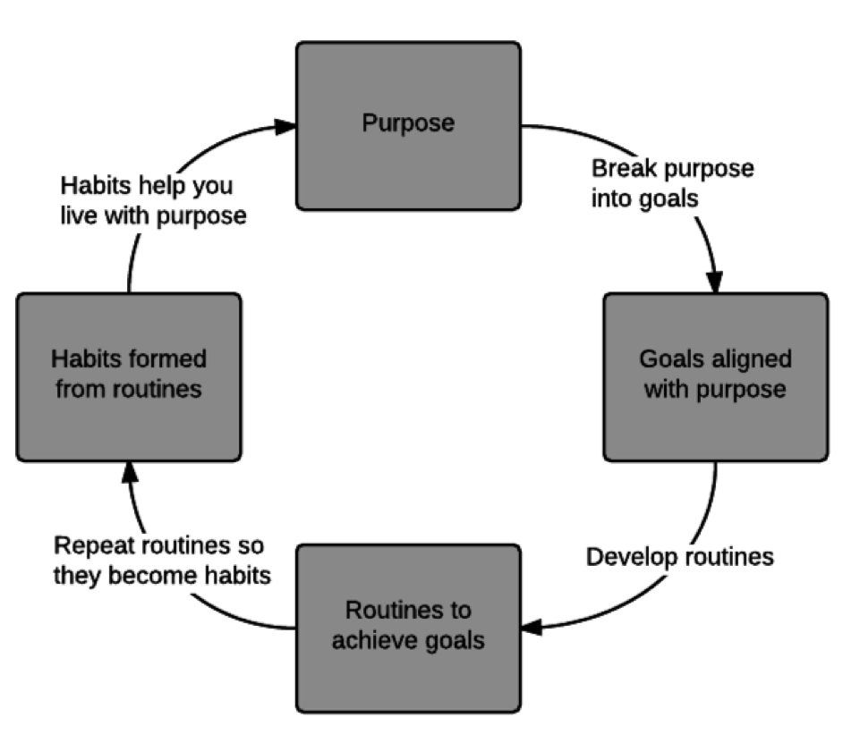

Chapter 1: Find your purpose

Introducing a fun, easy way to discover your purpose
In this chapter, you’ll discover:
- the surprising health benefits of purpose;
- how purpose creates a virtuous cycle in your life; and
- ten questions to help you define your purpose.
My goal is simple: to help you gain a deeper understanding of what you want from life, and start acting towards those goals right away.
Because here’s the thing: If you don’t choose your life’s direction—someone else will.
So let’s get deep, man.
In this cosmic arena, we’re all wind-up dolls, marching to our doom. Whoever wound us up—and for what purpose—is uncertain.
But here's what is certain: you have a purpose—and you must define it. So from the cradle to the grave, march to your own tune. And when you find your groove, dear reader, remember the immortal words of America’s greatest warrior-poet:
“Gangstas don’t dance, we boogie.” —Ice Cube, Rapper
Boogie on, truth-seekers. Boogie on.
Finding your purpose: a cautionary tale
Purpose: the reason for which something is done or created or for which something exists.
Years ago—before this book was a glimmer in my mind’s eye—I hadn’t the foggiest clue about my purpose.
As a result, I felt unsure, confused, and directionless. (Sometimes I still do.)
Look, I’m a bubbling cauldron of insecurities, inconsistencies, and incompatibilities. I get that. And I’m pretty sure you are, too, right?
The truth is, we’ll never be Jesus, Buddha, Mohammed, or Elvis. It ain’t gonna happen. But what we can do is define our own life’s purpose and strive towards it, every day.
Start with your why. Then worry about your what and how. Because without the why, you’re sowing seeds for a field of regret.
And speaking of regrets: People tend to regret what they didn’t do more than what they did—except, of course, for tattoos.
Here’s a quick example:
I remember my grandfather on his deathbed. I was twelve. Despite being in his early eighties and half-blind from diabetes, he’d put playing cards on the floor—all in a row, like small breadcrumb trails—that led throughout the house.
I’d follow the trail of cards, choosing one route over another, then backtracking when it led straight into a wall.
Another fork; another choice. Backtrack. Try again. And so on, until, finally, I arrived at the proverbial pot-of-gold—a package of Oreo cookies.
Together we’d celebrate by munching Oreos—he ate his dry; mine, twisted off, cream side up, and dipped in milk—while I told him about my day.
Granted, an average twelve-year-old’s day is about as boring as Ben Stein in Ferris Bueller’s Day Off, but he always seemed genuinely interested. (Of course, I come from a long line of bullshitters, so who knows.)
At the end of the day, one or both of my parents would show up, and—as I was running out the door, feet pounding the floor at a rapid pace—I’d look back and shout, “Love you, Grandpa!”
And he’d reply with, “Ditto.” (Actually, it wasn’t “ditto,” that was Patrick Swayze in Ghost; but his response was similar.)
He never said, “I love you, too”—until he was on his deathbed. And that’s when I knew he was going to die.
My point?
You know your purpose. You always have. Now say it out loud—before it’s too late.
In fact...
Studies reveal that having purpose in your life will make you healthier and live longer
Humans thrive with purpose—and wilt without it.
Let’s quickly review three studies that discuss the effect of purpose on health. The first study, at the University of Wisconsin–Madison, tracked close to 5,000 people over nine years and found that “those with persistently high well-being reported better health… across time compared to those with persistently low well-being.” In their conclusion, the authors’ stress the need to promote well-being: “The findings underscore the importance of intervention and educational programs designed to promote well-being for greater segments of society.”
Purpose will also help keep you out of a hospital. A study published in the Proceedings of the National Academy of Sciences found that “higher purpose was linked with greater use of several preventive health care services and also fewer nights spent hospitalized.” People with purpose spent an average of 17% fewer days in a hospital.
Based on the above, it’s no surprise that purpose will help you live longer. A study conducted by the Department of Psychology at Carleton University found that “purposeful individuals lived longer than their counterparts did during the 14 years after the baseline assessment, even when controlling for other markers of psychological and affective well-being.”
The best part of that study? These results were not conditional on participants’ age, how long they lived during the follow-up period, or whether they had retired from the workforce.
In other words, if you have a reason to live—you will.
Now that we’ve seen the benefits of purpose let’s focus on...
Defining purpose: a good example (and a crappy one)
Purpose is nebulous. Ask someone their purpose in life, and they’ll give you some vague, hazy, fart-of-a-phrase like, “Lead a good life” or “Be the best I can be.”
Ugh.
To lead a 10x life, we must clearly define our purpose.
Compare the following:
- “My purpose is to help people.” (Meh.)
- “My purpose is to learn, grow, and develop myself, while helping others to do the same.” (Great!)
Defining your purpose is vital. Without defining your purpose, you’re set adrift and doomed to float through life, directionless.
In just a moment, we’ll work together to define your purpose.
But before we do, I want you to understand how defining your purpose ties into the bigger picture—and helps kick off a virtuous cycle.
How your purpose kicks off a virtuous cycle
Virtuous cycle: a chain of events which reinforce themselves through a feedback loop.
It’s a simple process, really. First, define your purpose. Second, break your purpose into a series of goals. Third, develop routines to achieve your goals. Over time, those routines become habits, they become automatic—and eventually, those habits define you.
Here’s a simple visual:
It’s important to create goals that align with your purpose.
Peter Drucker—an educator, management consultant and all-around smart dude—said: “What gets measured, gets managed.” That’s why we define our purpose and then set measurable goals. If they aren’t measured, they aren’t managed. (We’ll cover goal-setting in Chapters 2 and 3.)
Your next step is to design routines to achieve your goals. You’ll learn the secrets to building rock-solid routines in Chapter 5.
Routines eventually become habits. You’ll do them automatically, subconsciously, and live a life aligned with your purpose. As Aristotle said, “We are what we repeatedly do. Excellence, then, is not an act, but a habit.”
Well said. Measure what matters. Create routines. Develop habits. And become who you want to be.
So let’s get started, shall we?
Let’s get inside that skull of yours—or heart, or chakra, or whatever—and figure out what makes you tick.
10 questions to help you realize your purpose
Ask yourself:
- What are my natural gifts?
- What do I love to do?
- When do I feel the most alive?
- What am I passionate about?
- Who inspires me? What do I admire most about them?
- What have others always said that I am really good at?
- What would I change in the world if I could?
- If I could write my life story at the end of my life, what would I want to put in that story?
- What would I attempt if I was guaranteed success?Here’s the one I find most powerful:
- How would my life change if I never had to work another day? What would I do more of? What would I do less of? What would I start doing? What would I stop?
These questions are also available in a Google Doc at www.10xtoday.com/life-resources.
Here are my answers to help you get started:
- What are my natural gifts? (writing, running my mouth, teaching)
- What do I love to do? (travel, run, read, play with cats)
- When do I feel the most alive? (When I’m running, traveling, and mid-coitus—though not at the same time)
- What am I passionate about? (Helping others succeed, education, growing businesses)
- Who inspires me? What do I admire most about them? (Jim Rogers—he’s smart, successful, and drove around the world twice)
- What have others always said that I am really good at? (Writing, shooting the shit, being patient, and helping others)
- What would I change in the world if I could? (Offer free education for everyone, eliminate our dependence on oil)
- If I could write my life story at the end of my life, what would I want to put in that story? (That I traveled a lot, thought a lot, taught a lot, and wrote about all of it)
- What would I attempt if I was guaranteed success? (Develop an alternative form of energy)
- How would my life change if I never had to work another day? What would I do more of? What would I do less of? What would I start doing? What would I stop? (I would write and travel more. I would stop being chained to a computer all day long. I would start taking Spanish lessons. I would stop mowing lawns.)
Take a few minutes now to think through your answers.
Got your answers? Great job! In the next chapter we’ll put your purpose to the test.
Because here’s a secret:
Purpose is subjective: You won’t know what matters to you—until you try
Yeah, I know. It sounds a bit “after-school special,” but you need to try; because until you do, you have no idea if what you’re doing matters—or if it’s just a passing fancy.
Purpose is subjective; as a result, people find purpose in the strangest places. For example, let’s say you’re at a dinner party. At the party, you ask two people—a doctor and a dishwasher—about what they do for a living.
Who is more likely to derive purpose from their work?
Researchers at the University of Michigan wanted to find out. In the study, they learned that people defined their work in one of three ways:
- Job (focus on financial rewards and necessity rather than pleasure or fulfillment; not a major positive part of life), a
- Career (focus on advancement), or a
- Calling (focus on the enjoyment of fulfilling, socially useful work).
Here’s where it gets interesting: no matter which profession researchers looked into—from clerical to professional—they discovered an even distribution among people who classified their work as a job, career, or calling.
In other words, one-third of workers—in any profession—defined their work as a job; another third, a career; and the final third, a calling. Their occupation didn’t matter. Whether they were janitors, lawyers, doctors, or drug dealers, people either found purpose in what they did—or they didn’t.
The fact is: you don’t know how important something is until you start doing it. Action is invaluable for learning what matters to you.
For example, one summer I worked as a tour guide. I’d run three-week tours across the U.S. for thirteen tourists who wanted to see the country on a budget. It required driving as much as 500 miles a day and paid a whopping $30 a day.
Years later, I worked for Google.
On paper, it was pretty obvious which was better. Google paid more, fed me for free, gave me nights and weekends off, and—at the time of writing—had been voted #1 on Fortune’s 100 Best Companies to Work For six years in a row.
If you asked me which was more important, I’d take the tour guide position. No question.
For me, Google was a career, the tour company, a calling. I loved teaching people, giving them new experiences, and encountering new challenges (like when my tour van caught fire... long story). And I never would’ve known how important those things were to me if I hadn’t tried.
Purpose is not an answer. It’s not a question. It’s an action. We have no idea if something lights our fires until we try it.
So try more. Do more.
But more of what?
In the next chapter, we’ll answer that very question. We’ll map out where you are in this crazy ride called life, and what you want to experience along the way. You’ll get a crystal clear, 30,000-foot overview of your life—your values, beliefs, and desires—so you can start living every day driven by your purpose.
Summary
In this chapter you learned about the power of purpose. You also saw three scientific studies that showed how purpose can help you enjoy better health, spend less time in a hospital, and even live longer.
You also learned how to create a virtuous cycle in your life by:
- defining your purpose,
- creating goals aligned with that purpose,
- building routines to achieve those goals, and
- turning those routines into habits that are aligned with your goals.
You also discovered 10 essential questions to help you define your purpose, which you’ll use in the next chapter.
What you need to do next
Answer the following 10 questions to nail down your purpose. Write them down, or just answer them in your head. Take a moment now to do this; your purpose will lay a firm foundation for everything else we’ll cover in this book.
- What are my natural gifts?
- What do I love to do?
- When do I feel the most alive?
- What am I passionate about?
- Who inspires me? What do I admire most about them?
- What have others always said that I am really good at?
- What would I change in the world if I could?
- If I could write my own life story at the end of my life, what would I want to put in that story?
- What would I attempt if I was guaranteed success?
- How would my life change if I never had to work another day? What would I do more of? What would I do less of? What would I start doing? What would I stop?
Read Mark Manson’s insightful (and hilarious) 7 Strange Questions That Help You Find Your Life Purpose. (My personal favorite: “What’s Your Favorite Flavor of Shit Sandwich and Does It Come With an Olive?”)